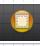
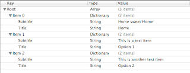
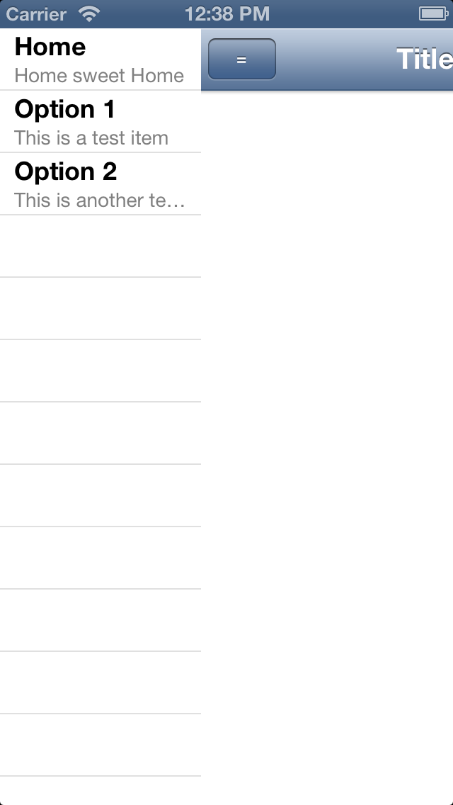
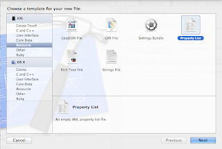
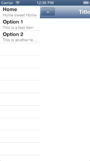
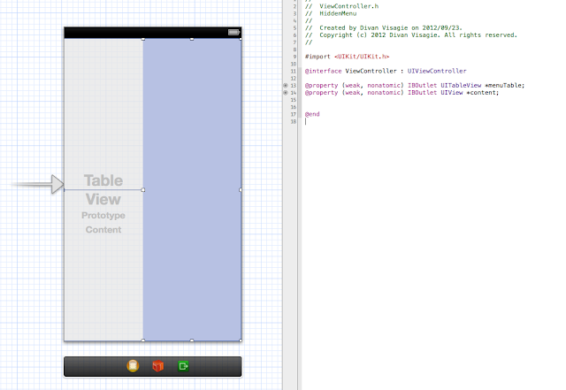

Creating a hidden menu in iOS
2012-09-24 Updated 2025-12-31 · dc272e6In this tutorial we will create an iPhone app with a hidden menu system using animations and gestures.We start off by creating a new single view project. I have just recently upgraded to Xcode 4.5 and so I have the option to develop for iOS6 and the iphone 5 so the screenshots will be a little taller than normal. I named my project HiddenMenu. Our menu will be based on a table view so drag one of those on to the view on the storyboard. We also want something to cover our menu with and display content so we also drag out a standard UIView to sit next to it. While working with these views I keep them next to each other and only cover the menu at runtime. We will be working with the default ViewController so the next step after dragging these items onto the view is to link them up as outlets:  Don't forget to set the ViewController as the delegate and data source for the tableView , we do this by ctrl+dragging to the ViewController icon and selecting both delegate and dataSource.  ViewController icon We also need to modify the code of ViewController.h to look like the following:
{kind=link}
{kind=link}
#import <UIKit/UIKit.h>
@interface ViewController : UIViewController <UITableViewDataSource,UITableViewDelegate>
@property (weak, nonatomic) IBOutlet UITableView *menuTable;
@property (weak, nonatomic) IBOutlet UIView *content;
@end
Back to the storyboard , lets add a cell to the menuTable(style:subtitle) and give it the Reuse Identifier "MenuCell"  Finally , we add a navigation bar and a button to the "content" UIView. Link the navigation bar as an outlet and its button as the action *showMenuDown. *This should be the last time we need to deal with the views so you can go ahead and cover up the tableview with the content UIView The menu list For the menu table we will do something interesting, we will be populating the table using an array of dictionaries,but this array will be obtained from a plist file.Before we get into this though , lets create the menuArray in the private interface of ViewController.m .
{kind=link}
@interface ViewController ()
@property (strong,nonatomic) NSArray *menuArray; //array for menu
@end
Now lets create a plist file,create a new file , under the iOS section choose resource and then choose Property List. I simply named mine Menu.  After this we populate the plist file with some data , I filled mine out with the following structure:  Now its time to fill the *menuArray ,*So switch back to ViewController.m and add the following to the viewDidLoad :
{kind=link}
{kind=link}
//Find the path for the menu resource and load it into the menu array
NSString *menuPlistPath = [[NSBundle mainBundle] pathForResource:@"Menu" ofType:@"plist"];
menuArray = [[NSArray alloc] initWithContentsOfFile:menuPlistPath];
Finally (for the menu population at least) , we need to implement the datasource methods to populate the menu table. Note that here I have used some of the new Objective-C functionality for dictionary access , if you are having issues here , resorting to the code in the comments may solve your problem.
#pragma mark - UITableView Datasource -
-(NSInteger)tableView:(UITableView *)tableView numberOfRowsInSection:(NSInteger)section{
return menuArray.count;
}
-(NSInteger)numberOfSectionsInTableView:(UITableView *)tableView{
return 1;
}
-(UITableViewCell*)tableView:(UITableView *)tableView cellForRowAtIndexPath:(NSIndexPath *)indexPath{
UITableViewCell *cell = [tableView dequeueReusableCellWithIdentifier:@"MenuCell"];
NSDictionary *menuItem = [menuArray objectAtIndex:indexPath.row];
cell.textLabel.text = menuItem[@"Title"]; /* Note , this is new objective c functionality ,
for older versions use [menuItem objectForKey:@"Title"];*/
cell.detailTextLabel.text = menuItem[@"Subtitle"];
return cell;
}
The animations Now that we are done populating the menu , lets show its contents. First , implement the following methods to animate the showing and hiding of the menu:
#pragma mark - animations -
-(void)showMenu{
//slide the content view to the right to reveal the menu
[UIView animateWithDuration:.25
animations:^{
[content setFrame:CGRectMake(menuTable.frame.size.width, content.frame.origin.y, content.frame.size.width, content.frame.size.height)];
}
];
}
-(void)hideMenu{
//slide the content view to the left to hide the menu
[UIView animateWithDuration:.25
animations:^{
[content setFrame:CGRectMake(0, content.frame.origin.y, content.frame.size.width, content.frame.size.height)];
}
];
}
And then we implement those methods in the showMenuDown button action:
#pragma mark - Actions -
- (IBAction)showMenuDown:(id)sender {
if(content.frame.origin.x == 0) //only show the menu if it is not already shown
[self showMenu];
else
[self hideMenu];
}
We also implement the tableview delegate so that we can see the menu in action , when a menu item is pressed ,we will set the title of the navigation bar to the title of the menu option.
#pragma mark - UITableView Delegate -
-(void)tableView:(UITableView *)tableView didSelectRowAtIndexPath:(NSIndexPath *)indexPath{
contentNavBar.topItem.title = menuArray[indexPath.row][@"Title"]; /*I went wild with the new
syntax on this one*/
}
Now , if you run the app , you should be able to click the button on the navigation bar to show or hide the menu.  Gestures Pressing a button to show and hide the menu is fine, and it works, but this is a touch screen device and we want gestures! To do this we add some gesture recognizers to the main view in the viewDidLoad . A swipe to the left will hide the menu and a swipe to the right will reveal it.
{kind=link}
//add some gestures
UISwipeGestureRecognizer *swipeLeft = [[UISwipeGestureRecognizer alloc] initWithTarget:self action:@selector(handleSwipeLeft:)];
[swipeLeft setDirection:UISwipeGestureRecognizerDirectionLeft];
[self.view addGestureRecognizer:swipeLeft];
UISwipeGestureRecognizer *swipeRight = [[UISwipeGestureRecognizer alloc] initWithTarget:self action:@selector(handleSwipeRight:)];
[swipeRight setDirection:UISwipeGestureRecognizerDirectionRight];
[self.view addGestureRecognizer:swipeRight];
Next we handle the gestures , note that here I have done some checks so that the animations aren't fired if they are not required.
#pragma mark - Gesture handlers -
-(void)handleSwipeLeft:(UISwipeGestureRecognizer*)recognizer{
if(content.frame.origin.x != 0)
[self hideMenu];
}
-(void)handleSwipeRight:(UISwipeGestureRecognizer*)recognizer{
if(content.frame.origin.x == 0)
[self showMenu];
}
Thats it , now you should be able to show or hide the menu by swiping left or right , anywhere in the view. The full Xcode project for this tutorial is available here on GitHub
Originally posted on Blogspot